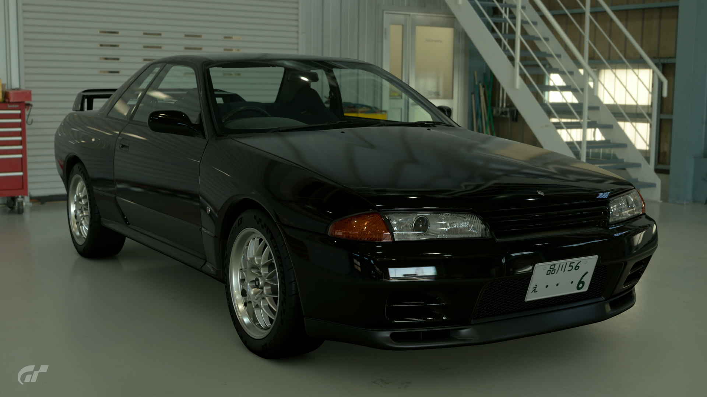
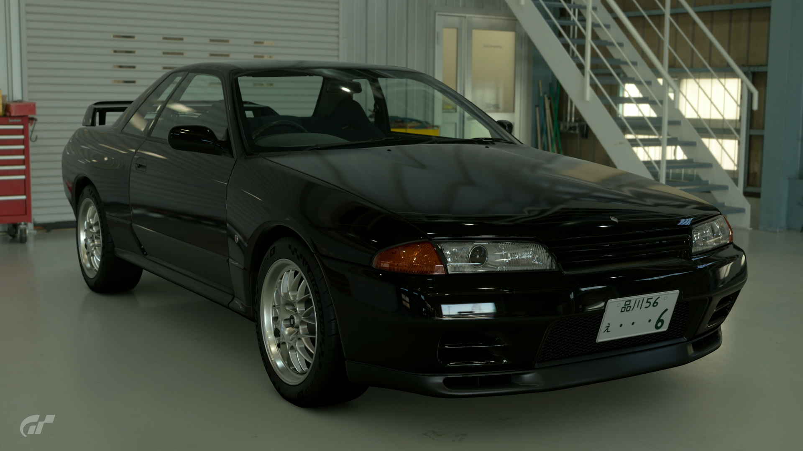

1994 Nissan Skyline GT-R R32 V-Spec
Of all the Nissan Skyline GT-Rs, this R32 stands out as revolutionary! From the late 1960s to the early '70s, the Skyline seemed to be near unstoppable in the Japanese race circuit. However, Nissan halted production in response to the 1973 oil crisis. In 1989, the GT-R name was revived with this R32 Skyline GT-R. Nissan poured all of its technical know-how into its development. The hard work paid off, as the R32 dominated the competition from the get-go, winning the hearts of motorsport fans. I can only imagine that its value will continue to increase over time.
- Used (25347.2 mi)
- Stock
- 5MT
- Saitama, Japan
- Black
- 280hp
¥6,425,000